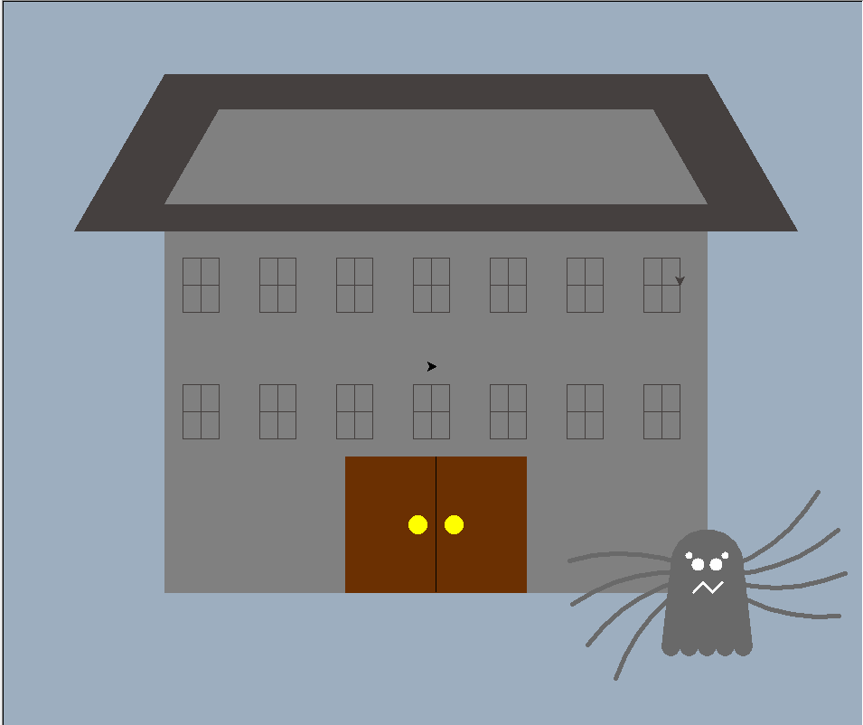
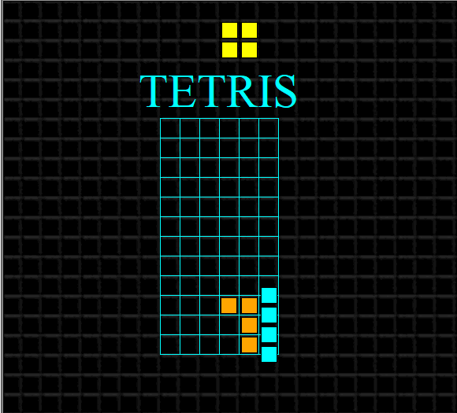
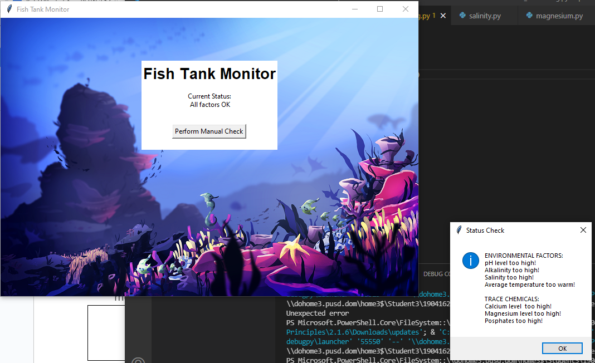
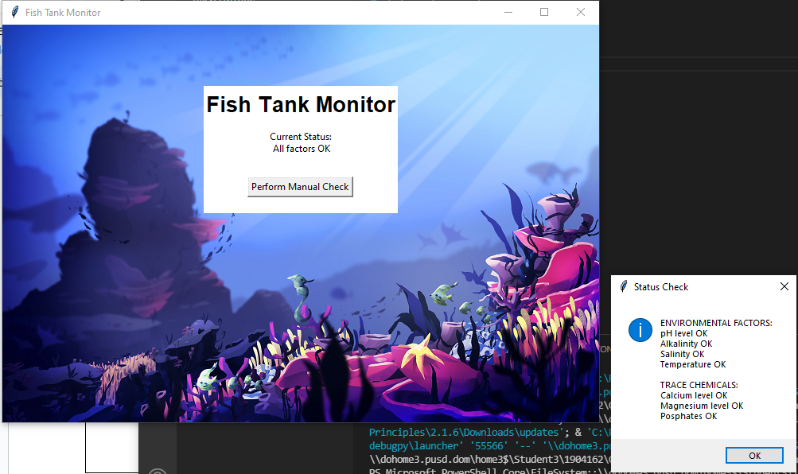
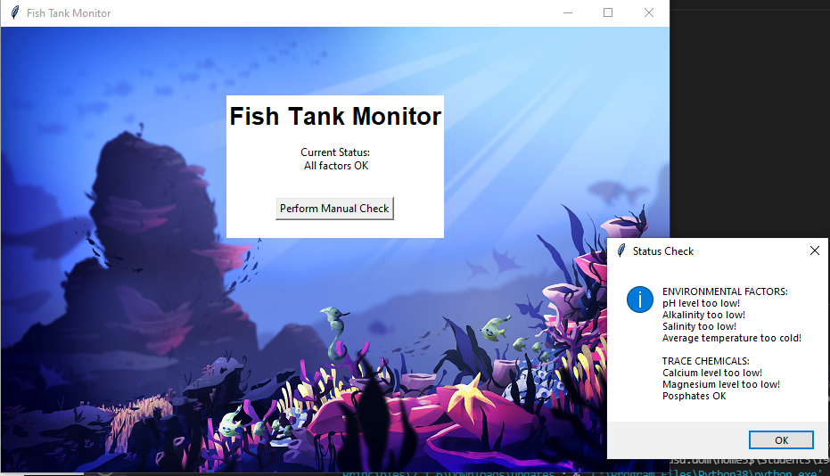
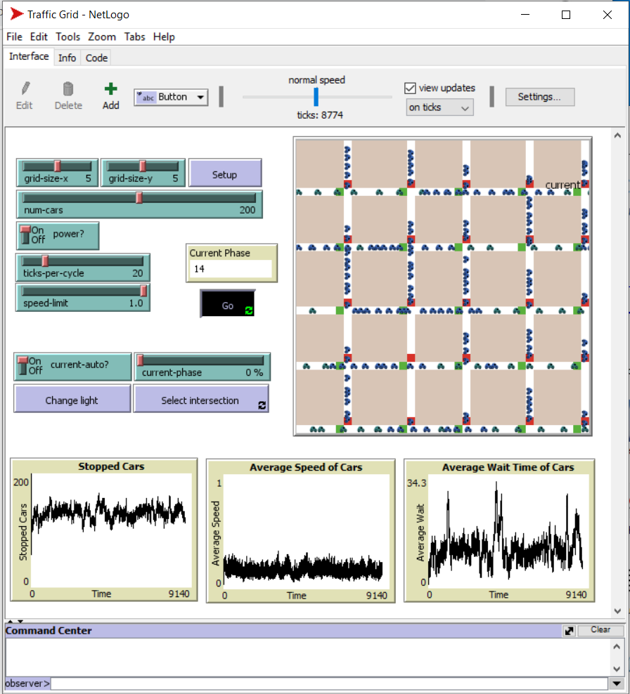
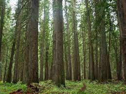

This is my Portfolio Page!
1.1.9 Haunted Mansion Project
We created an interactive haunted mansion game in which you answer questions and earn points to make the ghosts happy and continue on or lose points to make the ghosts angry and lose.
1.2.5 Tetris!
We created our own, simplified version of Tetris in which a piece is randomly generated and you can move it and drop it into the grid. The pieces will stop from colliding, and you get points based on how many shapes you can fit!
Scratch Project - Mouse Maze


We decided to create a mouse game maze where a mouse has to try and get through different levels to get food. You can choose the color of your mouse and the trail it draws and you have a time limit to solve as many levels as possible!
Fish Tank Debugging Project!
  We worked to find a data breach that led to a fish tank simulation to be altered. We then went through to find the issues that were changed and debug them to bring the program back to normal.
4.1.4 Simulation Project
We analyzed many differnent simultaions in NetLogo, and for our final project, we decided to analyze a trffic ghrid simulation. We looked at what the different components represent, and how the model might be changed to better simulate real-life situations and have more applications.
3.1.6 Rover Project
We used collected data to determine the location of a lost rover! We had to match what data was what and compare it with similar enviornmental data to determine the location. We ultimately decided it was probably located in the inland forests.